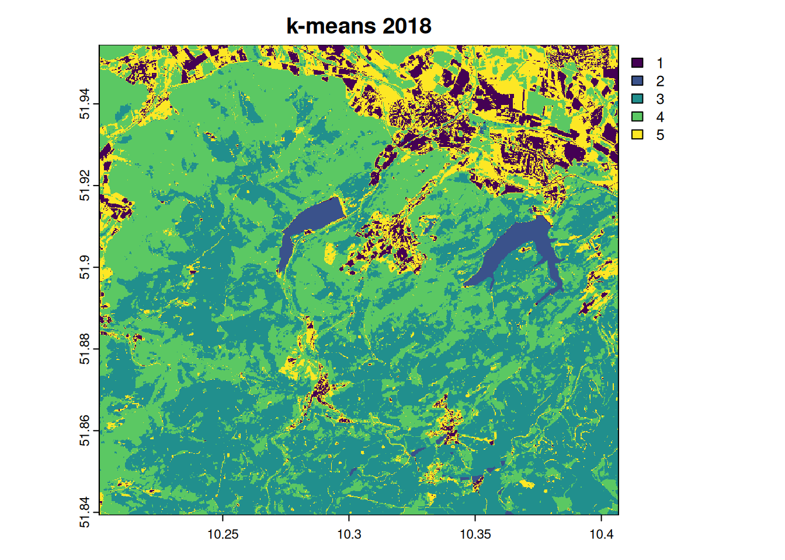

# ---- 0 Project Setup ----
require("pacman")
# Achtung: OpenStreetMap nicht laden (zieht rJava)
pacman::p_load(
mapview, mapedit, tmap, tmaptools,
raster, terra, stars, gdalcubes, sf,
webshot, dplyr, downloader, tidyverse,
RStoolbox, rprojroot, exactextractr,
randomForest, ranger, e1071, caret,
link2GI, rstac, colorspace, ows4R, httr
)
root_folder <- rprojroot::find_rstudio_root_file()
ndvi.col <- function(n) rev(colorspace::sequential_hcl(n, "Green-Yellow"))
ano.col <- colorspace::diverging_hcl(7, palette = "Red-Green", register = "rg")In the geosciences, remote sensing is the only measurement technique that allows complete coverage of large spatial areas, up to the entire Earth’s surface. Its successful application requires both the use of existing methods and the adaptation and development of new ones.
Introduction
In geospatial or environmental informatics, the detection of changes to the Earth’s surface using satellite, aircraft or drone images, known as change detection analysis, is an important application. These results are often linked to biophysical, geophysical or anthropogenic processes in order to gain both a deeper understanding and the possibility of developing predictive models. Methods of image analysis are of outstanding importance for generating spatial information from the underlying processes. Since both the quantity and quality of this “image data” are playing an increasingly important role in environmental monitoring and modeling, it is becoming more and more necessary to integrate “big data” concepts into the analyses. This means performing reproducible analyses with large amounts of data (>> 1 TB). This is essential for both scientific knowledge gain and future societal challenges.
As already explained in the introduction, we start with a scalable change detection analysis of forest damage in low mountain ranges, which is a typical application-oriented task. Scalable means that we limit the analysis to a manageable area, the Nordwestharz, and to two time slices. However, the resulting algorithm can be applied to different or larger areas and to more time slices.
Goals
This example shows how change detection methods can be applied conventionally to individual satellite scenes and in a modern way in cloud computing environments using rstac (Brazil Data Cube Team 2021) and gdalcubes (Appel und Pebesma 2019) or openeo (Lahn 2024). In addition to classical supervised classification methods such as Maximum Likelihood and Random Forest, the bfast (Verbesselt, Zeileis, und Herold 2012) is used, which includes an unsupervised method for detecting structural breaks in vegetation index time series.
Other packages used in this tutorial include stars (Pebesma 2019), tmap (Tennekes 2018) and mapview (Appelhans u. a. 2019) for creating interactive maps, sf (Pebesma 2018) for processing vector data, and colorspace (Zeileis u. a. 2020) for visualizations with accessible colors.
This study employs a variety of approaches to time series and difference analyses with different indices, using the Harz Mountains as a case study for the period between 2018 and 2023. The objective is to analyze or classify the data.
Information from satellite imagery
Unprocessed satellite images are not necessarily informative. While our eyes can interpret a true-color image relatively conclusively and intuitively, a reliable and reproducible, i.e. scientifically sound, interpretation requires other approaches. A major advantage of typical image analysis methods over visual interpretation is the derivation of additional, so-called invisible information.
To obtain useful or meaningful information, e.g. about the land cover in an area, we have to analyze the data according to the question at hand. Probably the best known and most widely used approach is the supervised classification of image data into categories of interest.
In this unit, you will learn about the classification of satellite image data. This includes both data acquisition on the Copernicus portal and the various steps from digitising the training data to evaluating the quality of the classifications.
We will cover the following topics:
-
- Preparing the work environment
- Retrieving Sentinel and auxilliary data
- Unsupervised classification (k-means clustering)
- Recording training areas
- Supervised classification (Random Forest, Maximum Likelihood)
- Estimating model quality
Theoretical principles
Please note that all types of classification usually require extensive data pre-processing. The focus is then on model building and quality assessment, which can be seen as the technical basis for classification, in order to finally derive the interpretation of the results in terms of content in the data post-processing.
We will go through this process step by step.
Unsupervised Classification - k-means clustering
Probably the best-known unsupervised classification technique is K-means clustering, which is also referred to as the “simplest machine learning algorithm”.
K-means clustering is a technique commonly used in satellite image classification to group pixels with similar spectral characteristics. Treating each pixel as an observation, the algorithm assigns pixels to clusters based on their spectral values, with each cluster having a mean (or centroid) that represents its central spectral signature. This results in the segmentation of the image into distinct regions (similar to Voronoi cells) corresponding to land cover types, such as water, vegetation or urban areas, facilitating further analysis. It is often used to obtain an initial overview of whether the raster data can be sufficiently separated in feature space.

Figure: Convergence of k-means clustering from an unfavorable starting position (two initial cluster centers are fairly close). Chire [CC BY-SA 4.0] via wikipedia.org
Supervised classification
In supervised land cover classification, a model is derived from a limited amount of training land cover data that predicts land cover for the entire data set. The land cover types are defined a priori, and the model attempts to predict these types based on the similarity between the characteristics of the training data and the rest of the data set.

Classifiers (e.g. the maximum likelihood classifier) or machine learning algorithms (such as Random Forest) use the training data to determine descriptive models that represent statistical signatures, classification trees or other functions. Within the limits of the quality of the training data, such models are suitable and representative for making predictions for areas if the predictors from the model are available for the entire area.
We now want to predict the spatial characteristics of clear-felling/no forest using a maximum likelihood classification and random forest, and apply standard methods of random validation and model quality assessment.
The goal is to separate clearcuts from all other pixels and to quantify the differences between 2018 and 2022.
Maximum Likelihood Classification
Maximum likelihood classification assumes that the distribution of data for each class and in each channel is normally distributed. Under this assumption, the probability that a particular pixel belongs to a particular class is calculated. Since the probabilities can also be specified as a threshold, without this restriction, all pixels are assigned regardless of how unlikely they are. Each pixel is assigned to the class that has the highest probability (i.e., the maximum probability).
Random forest
Random forests can be used for both regression and classification tasks, with the latter being particularly relevant in environmental remote sensing. Like any machine learning method, the random forest model learns to recognize patterns and structures in the data itself. Since the random forest algorithm also requires training data, it is also a supervised learning method.

Figure: Simplified illustration of data classification by random forest during training. Venkata Jagannath [CC BY-SA 4.0] via wikipedia.org
From a pragmatic point of view, classification tasks generally require the following steps:
- Creation of a comprehensive input data set that contains one or more raster layers.
- Selection of training areas, i.e. subsets of the input data set for which the land cover type is known to the remote sensing expert. Knowledge of the land cover can be obtained, for example, from one’s own or third-party in situ observations, management information or other remote sensing products (e.g. high-resolution aerial photographs).
- Training a model using the training sites. For validation purposes, the training sites are often subdivided into one or more test and training sites to evaluate the performance of the model algorithm.
- Applying the trained model to the entire data set, i.e. predicting the land cover type based on the similarity of the data at each site to the class characteristics of the training data set.
Change detection case study: Harz Mountains
Since 2018, there has been a notable increase in the incidence of extensive forest dieback in the Harz Mountains. During this period, the combination of repeated years of drought, extreme heat waves and the resulting weakening of the spruce trees led to an exponential increase in the population of bark beetles. The combined impact of these factors resulted in the extensive mortality of spruce stands across an area of approximately 30,000 hectares over a period of approximately five to six years. This equates to approximately 35% of the total forest area of the Harz.
It is important to note that the prolonged drought in 2018, 2019 and 2020, which is considered one of the most severe in the region, has significantly exacerbated the damage in the Harz Mountains.
In this context, a time series analysis or a change detection analysis is an essential technique for quantifying and localising the damage and characterising its dynamics.
Setting up the work environment
Please add any missing or defective packages in the above setup script (if error messages occur). On the basis of the available Sentinel data, the first step should be to identify suitable data sets for a surface classification.
Defining the Area of Interest
# download training data (also used for extent)
utils::download.file(
url = "https://github.com/gisma/gismaData/raw/master/geoinfo/train_areas_2019_2020.gpkg",
destfile = file.path(root_folder, "data/train_areas_2019_2020.gpkg"),
mode = "wb"
)
train_areas_2019_2020 <- sf::st_read(file.path(root_folder, "data/train_areas_2019_2020.gpkg"), quiet = TRUE)
bbox <- sf::st_bbox(train_areas_2019_2020)
# CORINE forest mask (optional step, cached)
if (!file.exists(file.path(root_folder,"data/corine_harz.tif"))){
corine <- terra::rast(file.path(root_folder,"data/U2018_CLC2018_V2020_20u1.tif"))
corine <- terra::project(corine,"EPSG:4326")
corine_harz <- terra::crop(corine, terra::vect(train_areas_2019_2020))
terra::writeRaster(corine_harz, file.path(root_folder,"data/corine_harz.tif"), overwrite=TRUE)
}
corine_harz <- terra::rast(file.path(root_folder,"data/corine_harz.tif"))
# Forest mask codes: 22..25 -> 1, else 0
rclmat <- matrix(c(-100,22,0, 22,26,1, 26,500,0), ncol = 3, byrow = TRUE)
harz_forest_mask <- terra::classify(corine_harz, rclmat, include.lowest = TRUE)
# quick view (optional)
# mapview::mapview(corine_harz) + mapview::mapview(train_areas_2019_2020, zcol="class") + harz_forest_maskStep 1: Retrieving Sentinel data
Alternative 1: Using gdalcubes with STAC
STAC & earth-search
# search the data stack for the given period and area
s <- rstac::stac("https://earth-search.aws.element84.com/v0")
items <- s |>
rstac::stac_search(
collections = "sentinel-s2-l2a-cogs",
bbox = c(bbox["xmin"], bbox["ymin"], bbox["xmax"], bbox["ymax"]),
datetime = "2018-06-01/2022-09-01",
limit = 600
) |>
rstac::post_request()
items###Items
- matched feature(s): 627
- features (600 item(s) / 27 not fetched):
- S2A_32UNC_20220901_0_L2A
- S2A_32UNC_20220829_0_L2A
- S2B_32UNC_20220827_0_L2A
- S2B_32UNC_20220824_0_L2A
- S2A_32UNC_20220822_0_L2A
- S2A_32UNC_20220819_1_L2A
- S2B_32UNC_20220817_0_L2A
- S2B_32UNC_20220814_0_L2A
- S2A_32UNC_20220812_0_L2A
- S2A_32UNC_20220809_0_L2A
- ... with 590 more feature(s).
- assets:
AOT, B01, B02, B03, B04, B05, B06, B07, B08, B09, B11, B12, B8A, info, metadata, overview, SCL, thumbnail, visual, WVP
- item's fields:
assets, bbox, collection, geometry, id, links, properties, properties.sentinel:boa_offset_applied, stac_extensions, stac_version, types2_collection <- gdalcubes::stac_image_collection(
items$features,
asset_names = c("B01","B02","B03","B04","B05","B06","B07","B08","B8A","B09","B11","SCL"),
property_filter = function(x) { x[["eo:cloud_cover"]] < 5 }
)
s2_collectionImage collection object, referencing 78 images with 12 bands
Images:
name left top bottom right
1 S2B_32UNC_20220824_0_L2A 9.494450 52.34699 51.35264 10.61137
2 S2A_32UNC_20220812_0_L2A 8.999721 52.35046 51.35264 10.61137
3 S2A_32UNC_20220623_0_L2A 8.999721 52.35046 51.35264 10.61137
4 S2B_32UNC_20220618_0_L2A 8.999721 52.35046 51.35264 10.61137
5 S2B_32UNC_20220615_0_L2A 9.471038 52.34716 51.35264 10.61137
6 S2B_32UNC_20220519_1_L2A 8.999721 52.35046 51.35264 10.61137
datetime srs
1 2022-08-24T10:26:32 EPSG:32632
2 2022-08-12T10:36:42 EPSG:32632
3 2022-06-23T10:36:42 EPSG:32632
4 2022-06-18T10:36:34 EPSG:32632
5 2022-06-15T10:26:36 EPSG:32632
6 2022-05-19T10:36:29 EPSG:32632
[ omitted 72 images ]
Bands:
name offset scale unit nodata image_count
1 B01 0 1 78
2 B02 0 1 78
3 B03 0 1 78
4 B04 0 1 78
5 B05 0 1 78
6 B06 0 1 78
7 B07 0 1 78
8 B08 0 1 78
9 B09 0 1 78
10 B11 0 1 78
11 B8A 0 1 78
12 SCL 0 1 78bbox_utm <- sf::st_as_sfc(bbox) |> sf::st_transform("EPSG:32632") |> sf::st_bbox()
v <- gdalcubes::cube_view(
srs = "EPSG:32632",
extent = list(
t0 = "2018-06", t1 = "2022-09",
left = bbox_utm["xmin"] - 10, right = bbox_utm["xmax"] + 10,
bottom = bbox_utm["ymin"] - 10, top = bbox_utm["ymax"] + 10
),
dx = 10, dy = 10, dt = "P1M",
aggregation = "median", resampling = "bilinear"
)
vA data cube view object
Dimensions:
low high count pixel_size
t 2018-06-01 2022-09-30 52 P1M
y 5744956.9172092 5755796.9172092 1084 10
x 583230.473549458 596220.473549458 1299 10
SRS: "EPSG:32632"
Temporal aggregation method: "median"
Spatial resampling method: "bilinear"# Only when you actually want to materialize the cube
s2_mask <- gdalcubes::image_mask("SCL", values = c(3,8,9))
gdalcubes::gdalcubes_options(parallel = 16, ncdf_compression_level = 5)
gdalcubes::raster_cube(s2_collection, v, mask = s2_mask) |>
gdalcubes::write_ncdf(file.path(root_folder,"data/harz_2018_2022_all.nc"), overwrite = TRUE)# Requires the netCDF produced above
gdalcubes::ncdf_cube(file.path(root_folder,"data/harz_2018_2022_all.nc")) |>
gdalcubes::apply_pixel("tanh(((B08-B04)/(B08+B04))^2)", "kNDVI") |>
gdalcubes::reduce_time("mean(kNDVI)") |>
plot(key.pos = 1, col = ndvi.col(11), nbreaks = 12)Alternative 2: Copernicus Data Space Ecosystem (CDSE)
Hinweis: In CI werden diese Chunks ausgeschaltet (
eval=eval_cdse), damit keine Secrets nötig sind.
library(CDSE); library(purrr); library(tibble)
safe_get <- function() {
tryCatch(CDSE::GetCollections(as_data_frame = FALSE), error = function(e) NULL)
}
collections_raw <- safe_get()
if (is.null(collections_raw)) {
message("CDSE GetCollections fehlgeschlagen – überspringe Anzeige.")
} else {
keys <- c("id","title","description","license","stac_version","sci:doi","keywords","type")
collections <- map(collections_raw, function(x) {
vals <- lapply(keys, function(k) if (!is.null(x[[k]])) x[[k]] else NA)
names(vals) <- keys
as_tibble(vals)
}) |> list_rbind()
collections
}# A tibble: 8 × 8
id title description license stac_version `sci:doi` keywords type
<chr> <chr> <chr> <chr> <chr> <lgl> <lgl> <chr>
1 sentinel-2-l1c Sent… Sentinel 2… propri… 1.0.0 NA NA Coll…
2 sentinel-3-ol… Sent… Sentinel 3… propri… 1.0.0 NA NA Coll…
3 sentinel-3-ol… Sent… Sentinel 3… propri… 1.0.0 NA NA Coll…
4 sentinel-3-sl… Sent… Sentinel 3… propri… 1.0.0 NA NA Coll…
5 sentinel-3-sy… Sent… Sentinel 3… propri… 1.0.0 NA NA Coll…
6 sentinel-1-grd Sent… Sentinel 1… propri… 1.0.0 NA NA Coll…
7 sentinel-2-l2a Sent… Sentinel 2… propri… 1.0.0 NA NA Coll…
8 sentinel-5p-l2 Sent… Sentinel 5… propri… 1.0.0 NA NA Coll…images <- CDSE::SearchCatalog(
bbox = sf::st_bbox(train_areas_2019_2020),
from = "2018-05-01", to = "2022-12-31",
collection = "sentinel-2-l2a", with_geometry = TRUE,
client = OAuthClient
)
imagesSimple feature collection with 683 features and 11 fields
Geometry type: POLYGON
Dimension: XY
Bounding box: xmin: 8.999721 ymin: 51.35264 xmax: 10.61137 ymax: 52.35046
Geodetic CRS: WGS 84
First 10 features:
acquisitionDate tileCloudCover areaCoverage satellite
1 2022-12-30 100.00 100 sentinel-2a
2 2022-12-27 79.03 100 sentinel-2a
3 2022-12-25 99.98 100 sentinel-2b
4 2022-12-22 99.41 100 sentinel-2b
5 2022-12-20 97.58 100 sentinel-2a
6 2022-12-17 29.46 100 sentinel-2a
7 2022-12-15 3.70 100 sentinel-2b
8 2022-12-10 95.68 100 sentinel-2a
9 2022-12-07 96.03 100 sentinel-2a
10 2022-12-05 99.97 100 sentinel-2b
acquisitionTimestampUTC acquisitionTimestampLocal
1 2022-12-30 10:36:29 2022-12-30 11:36:29
2 2022-12-27 10:26:31 2022-12-27 11:26:31
3 2022-12-25 10:36:29 2022-12-25 11:36:29
4 2022-12-22 10:26:31 2022-12-22 11:26:31
5 2022-12-20 10:36:28 2022-12-20 11:36:28
6 2022-12-17 10:26:31 2022-12-17 11:26:31
7 2022-12-15 10:36:28 2022-12-15 11:36:28
8 2022-12-10 10:36:30 2022-12-10 11:36:30
9 2022-12-07 10:26:33 2022-12-07 11:26:33
10 2022-12-05 10:36:27 2022-12-05 11:36:27
sourceId long.min
1 S2A_MSIL2A_20221230T103431_N0510_R108_T32UNC_20240803T051250.SAFE 8.999721
2 S2A_MSIL2A_20221227T102431_N0510_R065_T32UNC_20240805T222708.SAFE 9.476927
3 S2B_MSIL2A_20221225T103349_N0510_R108_T32UNC_20240806T140039.SAFE 8.999721
4 S2B_MSIL2A_20221222T102339_N0510_R065_T32UNC_20240804T111825.SAFE 9.485113
5 S2A_MSIL2A_20221220T103441_N0510_R108_T32UNC_20240803T223745.SAFE 8.999721
6 S2A_MSIL2A_20221217T102431_N0510_R065_T32UNC_20240805T123818.SAFE 9.478651
7 S2B_MSIL2A_20221215T103339_N0510_R108_T32UNC_20240805T070920.SAFE 8.999721
8 S2A_MSIL2A_20221210T103431_N0510_R108_T32UNC_20240803T150543.SAFE 8.999721
9 S2A_MSIL2A_20221207T102411_N0510_R065_T32UNC_20240806T043548.SAFE 9.476926
10 S2B_MSIL2A_20221205T103319_N0510_R108_T32UNC_20240802T232027.SAFE 8.999721
lat.min long.max lat.max geometry
1 51.35264 10.61137 52.35046 POLYGON ((8.999721 52.35046...
2 51.35264 10.61137 52.34711 POLYGON ((9.889693 52.34711...
3 51.35264 10.61137 52.35046 POLYGON ((8.999721 52.35046...
4 51.35264 10.61137 52.34705 POLYGON ((9.898648 52.34705...
5 51.35264 10.61137 52.35046 POLYGON ((8.999721 52.35046...
6 51.35264 10.61137 52.34710 POLYGON ((9.891455 52.3471,...
7 51.35264 10.61137 52.35046 POLYGON ((8.999721 52.35046...
8 51.35264 10.61137 52.35046 POLYGON ((8.999721 52.35046...
9 51.35264 10.61137 52.34711 POLYGON ((9.890282 52.34711...
10 51.35264 10.61137 52.35046 POLYGON ((8.999721 52.35046...summary(images$areaCoverage) Min. 1st Qu. Median Mean 3rd Qu. Max.
15.48 100.00 100.00 99.83 100.00 100.00 day <- images[order(images$tileCloudCover), ]$acquisitionDate[1:30]script_file_raw <- system.file("scripts", "RawBands.js", package = "CDSE")
script_file_kndvi <- "kndvi.js"
script_file_savi <- "savi.js"
script_file_evi <- "evi.js"
raw_2018_07_01 <- CDSE::GetImage(
bbox = sf::st_bbox(train_areas_2019_2020), time_range = day[12],
script = script_file_raw, collection = "sentinel-2-l2a",
format = "image/tiff", mosaicking_order = "leastCC",
resolution = 10, mask = TRUE, buffer = 0.01, client = OAuthClient
)
names(raw_2018_07_01) <- c("B01","B02","B03","B04","B05","B06","B07","B08","B8A","B09","B11","B12")
kndvi_2018_07_01 <- CDSE::GetImage(
bbox = sf::st_bbox(train_areas_2019_2020), time_range = day[12],
script = script_file_kndvi, collection = "sentinel-2-l2a",
format = "image/tiff", mosaicking_order = "leastCC",
resolution = 10, mask = TRUE, buffer = 0.01, client = OAuthClient
)
names(kndvi_2018_07_01)[1] <- "kNDVI"
savi_2018_07_01 <- CDSE::GetImage(
bbox = sf::st_bbox(train_areas_2019_2020), time_range = day[12],
script = script_file_savi, collection = "sentinel-2-l2a",
format = "image/tiff", mosaicking_order = "leastCC",
resolution = 10, mask = TRUE, buffer = 0.01, client = OAuthClient
)
names(savi_2018_07_01)[1] <- "SAVI"
evi_2018_07_01 <- CDSE::GetImage(
bbox = sf::st_bbox(train_areas_2019_2020), time_range = day[12],
script = script_file_evi, collection = "sentinel-2-l2a",
format = "image/tiff", mosaicking_order = "leastCC",
resolution = 10, mask = TRUE, buffer = 0.01, client = OAuthClient
)
names(evi_2018_07_01)[1] <- "EVI"
pred_stack_2018 <- c(raw_2018_07_01, evi_2018_07_01[[1]], kndvi_2018_07_01[[1]], savi_2018_07_01[[1]])raw_2022_06_23 <- CDSE::GetImage(
bbox = sf::st_bbox(train_areas_2019_2020), time_range = day[1],
script = script_file_raw, collection = "sentinel-2-l2a",
format = "image/tiff", mosaicking_order = "leastCC",
resolution = 10, mask = TRUE, buffer = 0.01, client = OAuthClient
)
names(raw_2022_06_23) <- c("B01","B02","B03","B04","B05","B06","B07","B08","B8A","B09","B11","B12")
kndvi_2022_06_23 <- CDSE::GetImage(
bbox = sf::st_bbox(train_areas_2019_2020), time_range = day[1],
script = script_file_kndvi, collection = "sentinel-2-l2a",
format = "image/tiff", mosaicking_order = "leastCC",
resolution = 10, mask = TRUE, buffer = 0.01, client = OAuthClient
)
names(kndvi_2022_06_23)[1] <- "kNDVI"
savi_2022_06_23 <- CDSE::GetImage(
bbox = sf::st_bbox(train_areas_2019_2020), time_range = day[1],
script = script_file_savi, collection = "sentinel-2-l2a",
format = "image/tiff", mosaicking_order = "leastCC",
resolution = 10, mask = TRUE, buffer = 0.01, client = OAuthClient
)
names(savi_2022_06_23)[1] <- "SAVI"
evi_2022_06_23 <- CDSE::GetImage(
bbox = sf::st_bbox(train_areas_2019_2020), time_range = day[1],
script = script_file_evi, collection = "sentinel-2-l2a",
format = "image/tiff", mosaicking_order = "leastCC",
resolution = 10, mask = TRUE, buffer = 0.01, client = OAuthClient
)
names(evi_2022_06_23)[1] <- "EVI"
pred_stack_2022 <- c(raw_2022_06_23, evi_2022_06_23[[1]], kndvi_2022_06_23[[1]], savi_2022_06_23[[1]])
terra::writeRaster(pred_stack_2018, file.path(root_folder,"data/pred_stack_2018.tif"), overwrite=TRUE)
terra::writeRaster(pred_stack_2022, file.path(root_folder,"data/pred_stack_2022.tif"), overwrite=TRUE)Step2: Overview – Unsupervised classification
k-means clustering
# Requires pred_stack_2018/2022 (CDSE) or create equivalent stacks otherwise
if (!exists("pred_stack_2018")) pred_stack_2018 <- terra::rast(file.path(root_folder,"data/pred_stack_2018.tif"))
if (!exists("pred_stack_2022")) pred_stack_2022 <- terra::rast(file.path(root_folder,"data/pred_stack_2022.tif"))
prediction_kmeans_2018 <- RStoolbox::unsuperClass(
pred_stack_2018, nClasses = 5, norm = TRUE, algorithm = "MacQueen"
)
plot(prediction_kmeans_2018$map, main = "k-means 2018")
prediction_kmeans_2022 <- RStoolbox::unsuperClass(
pred_stack_2022, nClasses = 5, norm = TRUE, algorithm = "MacQueen"
)
plot(prediction_kmeans_2022$map, main = "k-means 2022")bfast: Spatial identification of magnitudes and time periods of kNDVI changes
gdalcubes::gdalcubes_options(parallel = 16)
gdalcubes::ncdf_cube(file.path(root_folder,"data/harz_2018_2022_all.nc")) |>
gdalcubes::reduce_time(names = c("change_date","change_magnitude"), FUN = function(x) {
knr <- exp(-((x["B08",]/10000)-(x["B04",]/10000))^2/(2))
kndvi <- (1 - knr) / (1 + knr)
if (all(is.na(kndvi))) return(c(NA,NA))
kndvi_ts <- ts(kndvi, start = c(2018,1), frequency = 12)
library(bfast)
tryCatch({
res <- bfast::bfastmonitor(kndvi_ts, start = c(2019,1), level = 0.01)
c(res$breakpoint, res$magnitude)
}, error = function(e) c(NA,NA))
}) |>
gdalcubes::write_ncdf(file.path(root_folder,"data/bfast_results.nc"), overwrite = TRUE)gdalcubes::ncdf_cube(file.path(root_folder,"data/bfast_results.nc")) |>
plot(key.pos = 1, col = ndvi.col(11), nbreaks = 12)Step 3 - Generating training data
pred_stack_2018 <- terra::rast(file.path(root_folder,"data/pred_stack_2018.tif"))
pred_stack_2022 <- terra::rast(file.path(root_folder,"data/pred_stack_2022.tif"))
tDF_2019 <- exactextractr::exact_extract(
pred_stack_2018, dplyr::filter(train_areas_2019_2020, year == 2019),
force_df = TRUE, include_cell = TRUE, include_xy = TRUE, full_colnames = TRUE, include_cols = "class"
)
|
| | 0%
|
|= | 2%
|
|=== | 4%
|
|==== | 6%
|
|====== | 8%
|
|======= | 10%
|
|========= | 12%
|
|========== | 15%
|
|============ | 17%
|
|============= | 19%
|
|=============== | 21%
|
|================ | 23%
|
|================== | 25%
|
|=================== | 27%
|
|==================== | 29%
|
|====================== | 31%
|
|======================= | 33%
|
|========================= | 35%
|
|========================== | 38%
|
|============================ | 40%
|
|============================= | 42%
|
|=============================== | 44%
|
|================================ | 46%
|
|================================== | 48%
|
|=================================== | 50%
|
|==================================== | 52%
|
|====================================== | 54%
|
|======================================= | 56%
|
|========================================= | 58%
|
|========================================== | 60%
|
|============================================ | 62%
|
|============================================= | 65%
|
|=============================================== | 67%
|
|================================================ | 69%
|
|================================================== | 71%
|
|=================================================== | 73%
|
|==================================================== | 75%
|
|====================================================== | 77%
|
|======================================================= | 79%
|
|========================================================= | 81%
|
|========================================================== | 83%
|
|============================================================ | 85%
|
|============================================================= | 88%
|
|=============================================================== | 90%
|
|================================================================ | 92%
|
|================================================================== | 94%
|
|=================================================================== | 96%
|
|===================================================================== | 98%
|
|======================================================================| 100%tDF_2020 <- exactextractr::exact_extract(
pred_stack_2022, dplyr::filter(train_areas_2019_2020, year == 2020),
force_df = TRUE, include_cell = TRUE, include_xy = TRUE, full_colnames = TRUE, include_cols = "class"
)
|
| | 0%
|
|== | 3%
|
|==== | 5%
|
|===== | 8%
|
|======= | 10%
|
|========= | 13%
|
|=========== | 15%
|
|============= | 18%
|
|============== | 21%
|
|================ | 23%
|
|================== | 26%
|
|==================== | 28%
|
|====================== | 31%
|
|======================= | 33%
|
|========================= | 36%
|
|=========================== | 38%
|
|============================= | 41%
|
|=============================== | 44%
|
|================================ | 46%
|
|================================== | 49%
|
|==================================== | 51%
|
|====================================== | 54%
|
|======================================= | 56%
|
|========================================= | 59%
|
|=========================================== | 62%
|
|============================================= | 64%
|
|=============================================== | 67%
|
|================================================ | 69%
|
|================================================== | 72%
|
|==================================================== | 74%
|
|====================================================== | 77%
|
|======================================================== | 79%
|
|========================================================= | 82%
|
|=========================================================== | 85%
|
|============================================================= | 87%
|
|=============================================================== | 90%
|
|================================================================= | 92%
|
|================================================================== | 95%
|
|==================================================================== | 97%
|
|======================================================================| 100%tDF_2019 <- dplyr::bind_rows(tDF_2019); tDF_2019$year <- 2019
tDF_2020 <- dplyr::bind_rows(tDF_2020); tDF_2020$year <- 2020
tDF_2019 <- tDF_2019[complete.cases(tDF_2019), ]
tDF_2020 <- tDF_2020[complete.cases(tDF_2020), ]
tDF <- rbind(tDF_2019, tDF_2020)
saveRDS(tDF, file.path(root_folder,"data/tDF_2018_2022.rds"))Step 4 - supervised classification
Maximum Likelihood Classification
set.seed(123)
tDF <- readRDS(file.path(root_folder,"data/tDF_2018_2022.rds"))
idx <- caret::createDataPartition(tDF$class, list = FALSE, p = 0.05)
trainDat <- tDF[idx,]
testDat <- tDF[-idx,]
trainDat$class <- as.factor(trainDat$class)
testDat$class <- as.factor(testDat$class)
sp_trainDat <- trainDat
sp_testDat <- testDat
sp::coordinates(sp_trainDat) <- ~x+y
sp::coordinates(sp_testDat) <- ~x+y
sp::proj4string(sp_trainDat) <- terra::crs(pred_stack_2018)
sp::proj4string(sp_testDat) <- terra::crs(pred_stack_2018)
prediction_mlc_2018 <- RStoolbox::superClass(
pred_stack_2018, trainData = sp_trainDat[,1:16], valData = sp_testDat[,1:16],
responseCol = "class", model = "mlc", tuneLength = 1,
trainPartition = 0.3, verbose = TRUE,
filename = file.path(root_folder,"data/prediction_mlc_2018.tif")
)
prediction_mlc_2022 <- RStoolbox::superClass(
pred_stack_2022, trainData = sp_trainDat[,1:16], valData = sp_testDat[,1:16],
responseCol = "class", model = "mlc", tuneLength = 1,
trainPartition = 0.3, verbose = TRUE,
filename = file.path(root_folder,"data/prediction_mlc_2022.tif")
)
saveRDS(prediction_mlc_2018, file.path(root_folder,"data/prediction_mlc_2018.rds"))
saveRDS(prediction_mlc_2022, file.path(root_folder,"data/prediction_mlc_2022.rds"))Random forest
ctrlh <- caret::trainControl(method = "cv", number = 10, savePredictions = TRUE)
rf_model <- caret::train(
x = trainDat[,2:16], y = trainDat[,1],
method = "rf", metric = "Kappa",
trControl = ctrlh, importance = TRUE
)
rf_model
saveRDS(rf_model, file.path(root_folder,"data/rf_model.rds"))Prediction on the original data
rf_model <- readRDS(file.path(root_folder,"data/rf_model.rds"))
prediction_rf_2018 <- terra::predict(pred_stack_2018, rf_model)
prediction_rf_2022 <- terra::predict(pred_stack_2022, rf_model)
saveRDS(prediction_rf_2018, file.path(root_folder,"data/prediction_rf_2018.rds"))
saveRDS(prediction_rf_2022, file.path(root_folder,"data/prediction_rf_2022.rds"))prediction_rf_2018 <- readRDS(file.path(root_folder,"data/prediction_rf_2018.rds"))
prediction_rf_2022 <- readRDS(file.path(root_folder,"data/prediction_rf_2022.rds"))
prediction_mlc_2018 <- terra::rast(file.path(root_folder,"data/prediction_mlc_2018.tif"))
prediction_mlc_2022 <- terra::rast(file.path(root_folder,"data/prediction_mlc_2022.tif"))
mask <- terra::resample(harz_forest_mask, pred_stack_2022)
plot(mask*prediction_rf_2022 - mask*prediction_rf_2018, main="RF Δ 2022–2018")
plot(mask*prediction_mlc_2022 - mask*prediction_mlc_2018, main="MLC Δ 2022–2018")Step 5: Estimation model quality
cm_rf <- caret::confusionMatrix(
data = predict(rf_model, newdata = testDat),
reference = testDat$class
)
cm_rfFinal Remarks
You may have noticed that we have mixed two different approaches …
Literatur
Appel, Marius, und Edzer Pebesma. 2019. „On-Demand Processing of Data Cubes from Satellite Image Collections with the gdalcubes Library“. Data 4 (3). https://www.mdpi.com/2306-5729/4/3/92.
Appelhans, Tim, Florian Detsch, Christoph Reudenbach, und Stefan Woellauer. 2019. mapview: Interactive Viewing of Spatial Data in R. https://CRAN.R-project.org/package=mapview.
Brazil Data Cube Team. 2021. rstac: Client Library for SpatioTemporal Asset Catalog. https://github.com/brazil-data-cube/rstac.
Lahn, Florian. 2024. openeo: Client Interface for ’openEO’ Servers. https://CRAN.R-project.org/package=openeo.
Pebesma, Edzer. 2018. „Simple Features for R: Standardized Support for Spatial Vector Data“. The R Journal 10 (1): 439–46. https://doi.org/10.32614/RJ-2018-009.
———. 2019. stars: Spatiotemporal Arrays, Raster and Vector Data Cubes. https://CRAN.R-project.org/package=stars.
Tennekes, Martijn. 2018. „tmap: Thematic Maps in R“. Journal of Statistical Software 84 (6): 1–39. https://doi.org/10.18637/jss.v084.i06.
Verbesselt, Jan, Achim Zeileis, und Martin Herold. 2012. „Near real-time disturbance detection using satellite image time series“. Remote Sensing of Environment 123: 98–108. https://doi.org/10.1016/j.rse.2012.02.022.
Zeileis, Achim, Jason C. Fisher, Kurt Hornik, Ross Ihaka, Claire D. McWhite, Paul Murrell, Reto Stauffer, und Claus O. Wilke. 2020. „colorspace: A Toolbox for Manipulating and Assessing Colors and Palettes“. Journal of Statistical Software 96 (1): 1–49. https://doi.org/10.18637/jss.v096.i01.